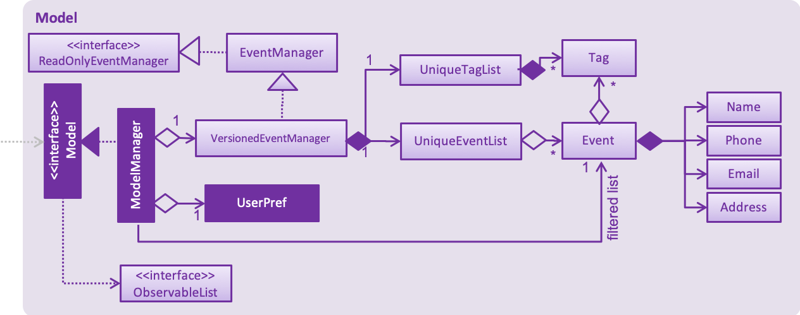

By: CS2113T-T12-1 Since: Aug 2018 Licence: MIT
1. Setting up
1.1. Prerequisites
-
JDK
9or laterJDK 10on Windows will fail to run tests in headless mode due to a JavaFX bug. Windows developers are highly recommended to use JDK9. -
IntelliJ IDE
IntelliJ by default has Gradle and JavaFx plugins installed.
Do not disable them. If you have disabled them, go toFile>Settings>Pluginsto re-enable them.
1.2. Setting up the project in your computer
-
Fork this repo, and clone the fork to your computer
-
Open IntelliJ (if you are not in the welcome screen, click
File>Close Projectto close the existing project dialog first) -
Set up the correct JDK version for Gradle
-
Click
Configure>Project Defaults>Project Structure -
Click
New…and find the directory of the JDK
-
-
Click
Import Project -
Locate the
build.gradlefile and select it. ClickOK -
Click
Open as Project -
Click
OKto accept the default settings -
Open a console and run the command
gradlew processResources(Mac/Linux:./gradlew processResources). It should finish with theBUILD SUCCESSFULmessage.
This will generate all resources required by the application and tests.
1.3. Verifying the setup
-
Run the
seedu.address.MainAppand try a few commands -
Run the tests to ensure they all pass.
1.4. Configurations to do before writing code
1.4.1. Configuring the coding style
This project follows oss-generic coding standards. IntelliJ’s default style is mostly compliant with ours but it uses a different import order from ours. To rectify,
-
Go to
File>Settings…(Windows/Linux), orIntelliJ IDEA>Preferences…(macOS) -
Select
Editor>Code Style>Java -
Click on the
Importstab to set the order-
For
Class count to use import with '*'andNames count to use static import with '*': Set to999to prevent IntelliJ from contracting the import statements -
For
Import Layout: The order isimport static all other imports,import java.*,import javax.*,import org.*,import com.*,import all other imports. Add a<blank line>between eachimport
-
Optionally, you can follow the UsingCheckstyle.adoc document to configure Intellij to check style-compliance as you write code.
1.4.2. Updating documentation to match your fork
After forking the repo, the documentation will still have the SE-EDU branding and refer to the se-edu/addressbook-level4 repo.
If you plan to develop this fork as a separate product (i.e. instead of contributing to se-edu/addressbook-level4), you should do the following:
-
Configure the site-wide documentation settings in
build.gradle, such as thesite-name, to suit your own project. -
Replace the URL in the attribute
repoURLinDeveloperGuide.adocandUserGuide.adocwith the URL of your fork.
1.4.3. Setting up CI
Set up Travis to perform Continuous Integration (CI) for your fork. See UsingTravis.adoc to learn how to set it up.
After setting up Travis, you can optionally set up coverage reporting for your team fork (see UsingCoveralls.adoc).
| Coverage reporting could be useful for a team repository that hosts the final version but it is not that useful for your personal fork. |
Optionally, you can set up AppVeyor as a second CI (see UsingAppVeyor.adoc).
| Having both Travis and AppVeyor ensures your App works on both Unix-based platforms and Windows-based platforms (Travis is Unix-based and AppVeyor is Windows-based) |
1.4.4. Getting started with coding
When you are ready to start coding,
-
Get some sense of the overall design by reading Section 2.1, “Architecture”.
-
Take a look at [GetStartedProgramming].
2. Design
2.1. Architecture

The Architecture Diagram given above explains the high-level design of the App. Given below is a quick overview of each component.
The .pptx files used to create diagrams in this document can be found in the diagrams folder. To update a diagram, modify the diagram in the pptx file, select the objects of the diagram, and choose Save as picture.
|
Main has only one class called MainApp. It is responsible for,
-
At app launch: Initializes the components in the correct sequence, and connects them up with each other.
-
At shut down: Shuts down the components and invokes cleanup method where necessary.
Commons represents a collection of classes used by multiple other components. Two of those classes play important roles at the architecture level.
-
EventsCenter: This class (written using Google’s Event Bus library) is used by components to communicate with other components using events (i.e. a form of Event Driven design) -
LogsCenter: Used by many classes to write log messages to the App’s log file.
The rest of the App consists of four components.
Each of the four components
-
Defines its API in an
interfacewith the same name as the Component. -
Exposes its functionality using a
{Component Name}Managerclass.
For example, the Logic component (see the class diagram given below) defines it’s API in the Logic.java interface and exposes its functionality using the LogicManager.java class.
Events-Driven nature of the design
The Sequence Diagram below shows how the components interact for the scenario where the user issues the command delete 1.
delete 1 command (part 1)
Note how the Model simply raises a EventManagerChangedEvent when the event manager data are changed, instead of
asking the Storage to save the updates to the hard disk.
|
The diagram below shows how the EventsCenter reacts to that event, which eventually results in the updates being saved to the hard disk and the status bar of the UI being updated to reflect the 'Last Updated' time.
delete 1 command (part 2)
Note how the event is propagated through the EventsCenter to the Storage and UI without Model having to be coupled to either of them. This is an example of how this Event Driven approach helps us reduce direct coupling between components.
|
The sections below give more details of each component.
2.2. UI component
API : Ui.java
The UI consists of a MainWindow that is made up of parts e.g.CommandBox, ResultDisplay, EventListPanel, StatusBarFooter, BrowserPanel etc. All these, including the MainWindow, inherit from the abstract UiPart class.
The UI component uses JavaFx UI framework. The layout of these UI parts are defined in matching .fxml files that are in the src/main/resources/view folder. For example, the layout of the MainWindow is specified in MainWindow.fxml
The UI component,
-
Executes user commands using the
Logiccomponent. -
Binds itself to some data in the
Modelso that the UI can auto-update when data in theModelchange. -
Responds to events raised from various parts of the App and updates the UI accordingly.
2.3. Logic component
API :
Logic.java
-
Logicuses theEventManagerParserclass to parse the user command. -
This results in a
Commandobject which is executed by theLogicManager. -
The command execution can affect the
Model(e.g. adding a event) and/or raise events. -
The result of the command execution is encapsulated as a
CommandResultobject which is passed back to theUi.
Given below is the Sequence Diagram for interactions within the Logic component for the execute("delete 1") API call.
delete 1 Command2.4. Model component
API : Model.java
The Model,
-
stores a
UserPrefobject that represents the user’s preferences. -
stores the event manager data.
-
exposes an unmodifiable
ObservableList<Event>that can be 'observed' e.g. the UI can be bound to this list so that the UI automatically updates when the data in the list change. -
does not depend on any of the other three components.
As a more OOP model, we can store a Tag list in event manager, which Event can reference. This would allow event manager to only require one Tag object per unique Tag, instead of each Event needing their own Tag object. An example of how such a model may look like is given below. |
2.5. Storage component
API : Storage.java
The Storage component,
-
can save
UserPrefobjects in json format and read it back. -
can save the event manager data in xml format and read it back.
2.6. Common classes
Classes used by multiple components are in the seedu.address.commons package.
3. Implementation
This section describes some noteworthy details on how certain features are implemented.
3.1. Authentication
3.1.1. Current Implementation
The authentication mechanism is facilitated by the Command class and the UserAccount class.
It stores the user information, which includes username and password, using a JSON file.
New methods are added in the Model interface to check whether a user account exists in the JSON file, and to create new user accounts in the JSON file.
Additional methods are also added to check the login and admin status of the user.
Additionally, a JsonUserStorage class has been created to handle the reading, parsing and writing of the JSON file.
Given below is an example usage scenario and how authentication behaves at each step.
Step 1. The user launches the application for the first time. The Step 2. The user has the option to create a new account using the command Step 3. The user executes the command Step 4. Step 5. Step 6. The Step 7. After authentication, the user can now start using the application. Step 8. The user can choose to log out of the application as well with the |
The sequence diagrams below describes the steps elaborated above.

If an authentication fails, i.e. credentials are wrong or do not exist in the JSON file, the login command will throw a CommandException.
|
Only one admin account is registered at any given time, with admin and root being used as username and password respectively.
|
3.1.2. Password encryption
Allows passwords to be encrypted instead of being stored as plain text. Password encryption and validating is done through the PasswordUtil class using the PBKDF2WithHmacSHA1 encryption algorithm.
The encrypted password consists of a randomly generated salt and a hash generated from the plain text password, both converted to hexadecimal before being stored inside users.json.
3.1.3. Design Considerations
-
Instead of encrypting each user’s password, we initially considered encrypting the entire
users.jsonfile instead. However, after careful consideration, we decided that it would be sub-optimal due to the inefficiency of having to constantly encypt and decrypt the files while the application is running. -
Instead of having the authentication feature being a part of the
logiccomponent, we initially considered havingauthenticationas a component of its own, which precedes the entire running of theMainApp. However, we decided that it would introduce redundancies in the codebase as it requires rewriting a handful of functionalities that are already present within thelogiccomponent, thus we opted for our current implementation.
3.2. Undo/Redo feature
3.2.1. Current Implementation
The undo/redo mechanism is facilitated by VersionedEventManager.
It extends EventManager with an undo/redo history, stored internally as an eventManagerStateList and
currentStatePointer
.
Additionally, it implements the following operations:
-
VersionedEventManager#commit()— Saves the current event manager state in its history. -
VersionedEventManager#undo()— Restores the previous event manager state from its history. -
VersionedEventManager#redo()— Restores a previously undone event manager state from its history.
These operations are exposed in the Model interface as Model#commitEventManager(), Model#undoEventManager() and Model#redoEventManager() respectively.
Given below is an example usage scenario and how the undo/redo mechanism behaves at each step.
Step 1. The user launches the application for the first time. The VersionedEventManager will be initialized with the
initial event manager state, and the currentStatePointer pointing to that single event manager state.
Step 2. The user executes delete 5 command to delete the 5th event in the event manager. The delete command calls
Model#commitEventManager(), causing the modified state of the event manager after the delete 5 command executes to be saved in the eventManagerStateList, and the currentStatePointer is shifted to the newly inserted event manager state.
Step 3. The user executes add n/Party … to add a new event. The add command also calls Model#commitEventManager(), causing another modified event manager state to be saved into the eventManagerStateList.
If a command fails its execution, it will not call Model#commitEventManager(), so the event manager state will not be saved into the eventManagerStateList.
|
Step 4. The user now decides that adding the event was a mistake, and decides to undo that action by executing the
undo command. The undo command will call Model#undoEventManager(), which will shift the currentStatePointer once
to the left, pointing it to the previous event manager state, and restores the event manager to that state.
If the currentStatePointer is at index 0, pointing to the initial event manager state, then there are no previous
event manager states to restore. The undo command uses Model#canUndoEventManager() to check if this is the case.
If so, it will return an error to the user rather than attempting to perform the undo.
|
The following sequence diagram shows how the undo operation works:
The redo command does the opposite — it calls Model#redoEventManager(), which shifts the currentStatePointer once
to the right, pointing to the previously undone state, and restores the event manager to that state.
If the currentStatePointer is at index eventManagerStateList.size() - 1, pointing to the latest event manager state,
then there are no undone event manager states to restore. The redo command uses Model#canRedoEventManager() to check if this is the case. If so, it will return an error to the user rather than attempting to perform the redo.
|
Step 5. The user then decides to execute the command list. Commands that do not modify the event manager, such as
list, will usually not call Model#commitEventManager(), Model#undoEventManager() or Model#redoEventManager(). Thus, the
eventManagerStateList remains unchanged.
Step 6. The user executes clear, which calls Model#commitEventManager(). Since the currentStatePointer is not
pointing at the end of the eventManagerStateList, all event manager states after the currentStatePointer will be
purged.
We designed it this way because it no longer makes sense to redo the add n/Party … command. This is the behavior
that most modern desktop applications follow.
The following activity diagram summarizes what happens when a user executes a new command:
3.2.2. Design Considerations
Aspect: How undo & redo executes
-
Alternative 1 (current choice): Saves the entire event manager.
-
Pros: Easy to implement.
-
Cons: May have performance issues in terms of memory usage.
-
-
Alternative 2: Individual command knows how to undo/redo by itself.
-
Pros: Will use less memory (e.g. for
delete, just save the event being deleted). -
Cons: We must ensure that the implementation of each individual command are correct.
-
Aspect: Data structure to support the undo/redo commands
-
Alternative 1 (current choice): Use a list to store the history of event manager states.
-
Pros: Easy for new Computer Science student undergraduates to understand, who are likely to be the new incoming developers of our project.
-
Cons: Logic is duplicated twice. For example, when a new command is executed, we must remember to update both
HistoryManagerandVersionedEventManager.
-
-
Alternative 2: Use
HistoryManagerfor undo/redo-
Pros: We do not need to maintain a separate list, and just reuse what is already in the codebase.
-
Cons: Requires dealing with commands that have already been undone: We must remember to skip these commands. Violates Single Responsibility Principle and Separation of Concerns as
HistoryManagernow needs to do two different things.
-
3.3. Comments
3.3.1. Current Implementation
The comments feature is facilitated by Comments class in the Logic/Comments folder. AddComment, DeleteComment and ReplyComment classes extend the Comments class. CommentFacade class creates objects of AddComment, DeleteComment and ReplyComment. The features of the following classes are as such:
-
Comments— Handles storage of comments, containsinitComments(String input)to reformat comment section to HTML,parseCommentSection(String input)to format the comment section into a vector andrewrite(Vector commentsVector)to obtain the edited comment section. -
AddComment— Adds a new comment to the end of the comment section with theaddComment(String comment, String username) -
DeleteComment— Deletes a comment given the line parameter indeleteComment(int line) -
ReplyComment— Replies a comment given the line parameter inreplyComment(String comment, int line, String username) -
CommentFacade— An implementation of the Facade design pattern to interact with AddCommentCommand, DeleteCommentCommand and ReplyCommentCommand. It contains addComment(String input, String comment, String username) to be used in AddCommentCommand to add a comment, deleteComment(String input, int line) to be used in DeleteCommentCommand to delete a comment and replyComment(String input, int line, String comment) to be used in ReplyCommentCommand to reply comments.
The Command Line Interface uses AddCommentCommand, DeleteCommentCommand, ReplyCommentCommand and EditCommand for the user to interact with the comment section. The features of the following classes are as such:
-
AddCommentCommand— Adds a comment usingCommentFacadeandAddCommentCommandParser -
DeleteCommentCommand— Deletes a comment usingCommentFacadeandDeleteCommentCommandParser -
ReplyCommentCommand— Replies to a comment usingCommentFacadeandReplyCommentCommandParser -
EditCommand— Resets the whole comment section usingeditEventDescriptorandEditCommandParser
Given below is an example usage scenario and how the Comments mechanism behaves at each step.
Step 1. The user launches the application, logs in and click on an event or types select INDEX into the CLI. The comment section will be seen along with other details in the BrowserPanel.
Step 2. The user/admin executes addComment 1 C/May I ask, what is the attire for the event? to add a comment to the 1st event in the Event Manager. AddCommentCommand command obtains the comment section from eventmanager.xml calls CommentFacade to add comment "May I ask, what is the attire for the event", into the comment section and stores the comment section into eventmanager.xml
The following sequence diagram shows how the AddCommentCommand operation works:

Detailed description of diagram: The user inputs "addComment 1 C/Hi". LogicManager#execute("addComment 1 C/Hi") and calls EventManagerParser#parseCommand("addComment 1 C/Hi"). Then, AddCommentCommandParser#parse("1 C/Hi") will be called and AddCommentCommand#execute() will obtain the event needed from eventmanager.xml. Finally, CommandFacade#addComment will be called and AddComment#addComment will process and add the new comment into the comment section. After all this, results will be returned to the various receivers and display an updated comments section to the user.
The replyComment and deleteComment command does similar methods and need not be elaborated.
Step 3. The user/admin executes replyComment 1 L/1 C/Athletic attire to reply the comment in step 2. ReplyCommentCommand command obtains the comment section from eventmanager.xml calls CommentFacade to reply comment with "Athletic attire", into the comment section and stores the comment section into eventmanager.xml
Step 4. The admin executes deleteComment 1 L/1 to delete a comment at index 1, line 1 of comment section. DeleteCommentCommand command obtains the comment section from eventmanager.xml calls CommentFacade to delete "Athletic attire" from the comment section and stores the comment section into eventmanager.xml
Step 5. If the admin wants to reset or make a new comment section of an event, the valid command of edit INDEX C/{span}Comment Section{/span}{ol}{/ol} can be used
|
3.3.2. Design Considerations
Aspect: How comment section is stored
-
Alternative 1 (current choice): Comment section stored in a single field in
eventmanager.xml-
Pros: Comment section will be easy to parse because only one field is used for comment section.
-
Cons: If a developer wants to manipulate specific comments through eventmanager.xml file, there is no functions created for it.
-
-
Alternative 2: Store each comment as a seperate field and extract each comment individually.
-
Pros: No HTML tags will be stored in the field.
-
Cons: New methods or data structures will need to be implemented to make many fields for comments.
-
Aspect: Data structure to support the comment function commands
-
Alternative 1 (current choice): A vector is used to store the comment section to add, insert or delete relevant comments.
-
Pros: A simple data structure that has vector.add() and vector.delete() methods to help edit the comment section easily.
-
Cons: Additional method is needed to parse the comment section into a vector.
-
-
Alternative 2: An arrayList or List
-
Pros: Library functions can help parse the comment section into the arrayList.
-
Cons: More code is needed to simply insert or delete elements inside the data structure.
-
3.4. RSVP
3.4.1. Current Implementation
The RSVP feature consists of the register & unregister command. The implementations of the commands use the EditEventDescriptor class and createEditedEvent method from EditCommand to aid in updating event attendance. Attendees of an event are stored in the eventmanager.xml file, in a similar fashion to the storage of tags.
Below is an example usage scenario and how the RSVP mechanism behaves:
Step 1: The user launches the application, clicks on an event or types select 2 into the CLI. Details of the 2nd event including event attendance are displayed.
Step 2: The user executes register 2 to register for the 2nd event. The register command takes in the current model and event at index 2, getting the username of the current user via Model#getUsername(), and the current attendance of the event as a HashSet with Event#getAttendance.
Step 3: The register command tries to add the username into the current attendance with add(). If the username already exists in the attendance, a CommandException is thrown. Else, EditCommand#EditEventDescriptor is used with the new attendance to create an edited event.
Step 4: The model is updated and committed, overwriting eventmanager.xml. The event page is reloaded to display the new event attendance.
Step 5: If the user decides to unregister from the event, the user executes unregister 2, and the unregister command gets the username and attendance in the same manner as the register command in Step 2.
Step 6: The unregister command tries to remove the username from the current attendance with remove(). If the username does not exist in the attendance, a CommandException is thrown. Else, EditCommand#EditEventDescriptor is used with the new attendance to create an edited event.
Step 7: The model is updated and committed as in Step 3, and the event page is again reloaded.
TreeSet is used when retrieving the attendance for display as it allows for easy sorting of attendee usernames. Usernames are sorted in case-insensitive order.
|
The following sequence diagram shows how the register operation works:
3.4.2. Design Considerations
Aspect: How to display attendance
-
Alternative 1 (current choice): Display event attendance list
-
Pros: Can see which other users are attending the event
-
Cons: More complex to implement
-
-
Alternative 2: Display whether current user is registered for an event
-
Pros: Easier to implement, user can easily see whether they are registered
-
Cons: New methods will need to be implemented to make many fields for comments.
-
Aspect: Where to store attendance
-
Alternative 1 (current choice): Attendance stored in
eventmanager.xmlin similar fashion to tags.-
Pros: Methods for parsing tags can be applied to parse attendance
-
Cons: Inefficient to retrieve list of events which a user has registered for
-
-
Alternative 2: Store with user details
-
Pros: Can easily check which events a user has registered for.
-
Cons: Inefficient to check which users are attending an event.
-
Aspect: How to store attendance
-
Alternative 1 (current choice): Attendance stored in unsorted order.
-
Pros: Easy to add new attendee to attendance.
-
Cons: Requires sorting whenever attendance is displayed.
-
-
Alternative 2: Attendance stored in sorted order.
-
Pros: No need to sort each time an event is reloaded.
-
Cons: More complexity for inserting in correct location.
-
3.5. Event Status and Reminders
3.5.1. Current Implementation
The Event Status and Reminder feature consists of two commands periodically executed by LogicManager. Specifically, the UpdateStatusCommand and the ReminderCommand. The automated process is facilitated by the Timer and TimerTask classes in the java.util package. The TimerTask updateEventStatus has a period of 300,000 ms where it will execute an instance of the UpdateStatusCommand, while the TimerTask checkEventReminders has a period of 36,000,000 ms where it will execute an instance of the ReminderCommand.
Both commands initially calls the model#getFilteredEventList() method to obtain the displayed list of events as lastShownList.
The UpdateStatusCommand updates the status of each event in the lastShownList using Status#setStatus() and model#updateEvent(). It then refreshes the displayed list by calling model#updateFilteredEventList().
The following sequence diagram shows how the UpdateStatusCommand works:
The Event Status feature is supported by the Status and DateTime field in the Event. Events with DateTime fields before the current Date will assume the COMPLETED Status, whereas those with DateTime fields after the current Date will take on the UPCOMING Status.
|
The ReminderCommand checks for the following in each event:
-
checkAttendeeKeywordsMatchEventAttendee— checks if the current user is registered as an attendee -
checkEventIsUpcoming— checks if the event is upcoming (happening in the next 24 hours)
If the two conditions are satisfied, a sendEventReminder event containing the event’s name and starting time is used to communicate with the UiManager to show an alert dialog using Ui#showAlertDialogAndWait() to display the event’s information.
The following sequence diagram shows how the ReminderCommand works:
3.5.2. Design Considerations
Aspect: To automate the commands or make them user-enabled
-
Alternative 1 (current choice): Status updates and reminders automated using
Timer.-
Pros: Takes the updating and checking tasks off users. Less reliance on users' end also means that updates and reminders are executed more regularly.
-
Cons: Uses up more processing resources.
-
-
Alternative 2: Users have to run status updates and reminders checking.
-
Pros: Ensures that the updated status or reminders are provided to users when they want it.
-
Cons: Users may be looking at very outdated statuses and will not receive reminders if they forget to check for it.
-
Aspect: How to automate the updates/checks
-
Alternative 1 (current choice): Status updates and reminder checks called using
Timer.-
Pros: A more reliable way to update the status and check for reminders.
-
Cons: More complexity added to the codes and timers use up more processing resources.
-
-
Alternative 2: Status updates and reminders called after each command given by the user.
-
Pros: Easier implementation by calling the status update or reminder check after every user command.
-
Cons: Less reliable and less effective method of updating since the statuses will not be updated if the user does not execute any commands.
-
Aspect: Where to implement the update and reminder command
-
Alternative 1 (current choice): Both features are subclass of the
Commandsuperclass.-
Pros: Easier implementation since there are already methods to execute commands. This implementation also allows users to call the commands if necessary.
-
Cons: Both features are not really commands that should be executed by the user and thus should not be subclasses of
Command.
-
-
Alternative 2: Create a new class in
LogicManagerwhich is responsible for the execution.-
Pros: The
TimerTaskcould be implemented in the command and theUpdateStatusCommandandReminderCommandneed only be called once. This also decreases the coupling withMainAppandEventManagerParser. -
Cons: A new method for executing the two commands would be required and the user would not be able to call for a status update should the need arise.
-
Aspect: How to implement the status update
-
Alternative 1 (current choice): Implemented using pre-existing codes such as
EditEventDescriptorandmodel#updateEvent().-
Pros: No need to add new codes for the implementation and add unnecessary complexities into the project code.
-
Cons: Inefficient method to update only the status since every other field in the event has to be copied over each time the status is updated.
-
-
Alternative 2: Write a
Event#setStatus()method to update the status.-
Pros: More efficient way of updating the statuses of events thus reducing the consumption of processing resources.
-
Cons: More lines of codes required and also adds to the complexity of the project code.
-
Aspect: Whether to add implementation to allow users to set reminders
-
Alternative 1 (current choice): Reminders are automatically sent to users who registered for an event.
-
Pros: Saves users the trouble of having to set the reminders themselves.
-
Cons: Users cannot unsubscribe to the reminders for events that they have registered for.
-
-
Alternative 2: Allow users to set reminders as they wish.
-
Pros: Users who do not want reminders can refuse to set reminders.
-
Cons: Users would have to set their own reminders. Some users may choose to save themselves the trouble of setting reminders and miss the events they have registered for.
-
3.6. Default sorting
3.6.1. Current Implementation
Since our product is an event manager, events should be controlled and view in chronological order.
To do this, UniqueEventList class was modified so as to sort the event list in Date order, follow by Name order.
Consider this scenario:
Step 1: User launches application, then logs in
Step 2: User adds a new event which will occur before some of the other events in the list
e.g: add n/Jack Birthday Party … d/10/10/2018 20:30…
Step 3: When add method is called, it performs the intended operation, then sorts the list before returning it to other components.
Step 4: The event list panel is reloaded and displays the newly added event in the correct place.
3.6.2. Aspect: How to sort the list
-
Alternative 1 (current choice): Event list will be sorted based on sort method implemented in
UniqueEventListclass to modify the internal list which event manager is backed on.-
Pros: Easy to implement with minimum modification that could affect other components.
-
Cons: Every method that changes the internal list (e.g: add, setEvent, delete) will need to implement the sorting method again at the end of the method.
-
-
Alternative 2: Sort only when we need to get the list if the list is not sorted.
-
Pros: The easiest implementation without affecting other components.
-
Cons: The sort operation when called by other components, for example the UI component, will return operations to the main thread, which will severely affect testing with JUnit on JavaFX thread.
-
-
Alternative 3: Only sort the list for displaying on the UI
-
Pros: Will perform minimal operation while still returning what we need to observe.
-
Cons: Very complicated implementation as the UI is updated based on observing internal list. We will need a class to update the UI if we only want to sort the list on display.
-
3.7. Enhance current find command
3.7.1. Current Implementation
find command is used for better navigation. Therefore, it is enhanced to search for more properties in an Event.
find can search for any data with the default keywords and . If specific prefixes are added, find can search for events that must contain that keyword in the specific fields.
If there are more than 1 prefixes of the same type, for example, find n/new n/dark n/meeting, they will be automatically combined together, which means that this command will be assumed to be the same as find n/new dark meeting.Current version implementation uses logic AND operator for different prefixes. |
3.7.2. Aspect: How to improve search
-
Alternative 1 (current choice): Modify the predicate to display the events that contain one of the keywords.
-
Pros: Follows the current structure of
findcommand, which means that current resources can be reused. -
Cons: With the current implementation of the predicate, scaling will severely affect product performance.
-
3.7.3. Future enhancement:
-
Search options for keywords contained or for the exact keywords.
-
Search with both
logic AND and OR operatorwith different prefixes. -
Search for events within a time range.
3.8. Export RVSP-ed events to iCalendar file
3.8.1. Current implementation
This feature will increase the compatibility of Event Manager with other calendar app for better planning.
Consider the following scenario:
Step 1: User launches the application, then logs in.
Step 2: User executes export my event calendar command. The export command receive argument to accept as filename
Step 3: Current user, who is logged in, will be used to receive an event filtered list that he/she has registered for.
Step 4: A FileOutputStream will be created to create new file/re-write if the file exists with the data from the filtered event list converted to iCalendar file format
3.8.2. Aspect: How to export the event list
-
Alternative 1 (current implementation): Using ical4j external library to create methods to convert events to RFC5545 format, then stream to FileOutputStream with given filename from user.
All method are written in theExportCalendarCommandclass.-
Pros: Easy to implement, can reuse current resources and easy to match wth the implementation of Attendance list.
-
Cons: Violates some of the OOP design as the export method should be in the storage class.
-
-
Alternative 2: Create a class to write an .ics file with given RFC5545 standard.
-
Pros: Have better control of the output file, since the ical4j support API has not been updated for a long time and currently shows some areas which are lacking.
-
Cons: Very complicated and time consuming.
-
|
Calendar will be exported to your src/data folder. |
3.8.3. [Proposed]: Future enhancement
Export should be able to export the attendance list of an event according to user preference.
3.9. Logging
We are using java.util.logging package for logging. The LogsCenter class is used to manage the logging levels and logging destinations.
-
The logging level can be controlled using the
logLevelsetting in the configuration file (See [Implementation-Configuration]) -
The
Loggerfor a class can be obtained usingLogsCenter.getLogger(Class)which will log messages according to the specified logging level -
Currently log messages are output through:
Consoleand to a.logfile.
Logging Levels
-
SEVERE: Critical problem detected which may possibly cause the termination of the application -
WARNING: Can continue, but with caution -
INFO: Information showing the noteworthy actions by the App -
FINE: Details that is not usually noteworthy but may be useful in debugging e.g. print the actual list instead of just its size
3.10. Configuration
Certain properties of the application can be controlled (e.g App name, logging level) through the configuration file (default: config.json).
4. Documentation
We use asciidoc for writing documentation.
| We chose asciidoc over Markdown because asciidoc, although a bit more complex than Markdown, provides more flexibility in formatting. |
4.1. Editing Documentation
See UsingGradle.adoc to learn how to render .adoc files locally to preview the end result of your edits.
Alternatively, you can download the AsciiDoc plugin for IntelliJ, which allows you to preview the changes you have made to your .adoc files in real-time.
4.2. Publishing Documentation
See UsingTravis.adoc to learn how to deploy GitHub Pages using Travis.
4.3. Converting Documentation to PDF format
We use Google Chrome for converting documentation to PDF format, as Chrome’s PDF engine preserves hyperlinks used in webpages.
Here are the steps to convert the project documentation files to PDF format.
-
Follow the instructions in UsingGradle.adoc to convert the AsciiDoc files in the
docs/directory to HTML format. -
Go to your generated HTML files in the
build/docsfolder, right click on them and selectOpen with→Google Chrome. -
Within Chrome, click on the
Printoption in Chrome’s menu. -
Set the destination to
Save as PDF, then clickSaveto save a copy of the file in PDF format. For best results, use the settings indicated in the screenshot below.

4.4. Site-wide Documentation Settings
The build.gradle file specifies some project-specific asciidoc attributes which affects how all documentation files within this project are rendered.
Attributes left unset in the build.gradle file will use their default value, if any.
|
| Attribute name | Description | Default value |
|---|---|---|
|
The name of the website. If set, the name will be displayed near the top of the page. |
not set |
|
URL to the site’s repository on GitHub. Setting this will add a "View on GitHub" link in the navigation bar. |
not set |
|
Define this attribute if the project is an official SE-EDU project. This will render the SE-EDU navigation bar at the top of the page, and add some SE-EDU-specific navigation items. |
not set |
4.5. Per-file Documentation Settings
Each .adoc file may also specify some file-specific asciidoc attributes which affects how the file is rendered.
Asciidoctor’s built-in attributes may be specified and used as well.
Attributes left unset in .adoc files will use their default value, if any.
|
| Attribute name | Description | Default value |
|---|---|---|
|
Site section that the document belongs to.
This will cause the associated item in the navigation bar to be highlighted.
One of: * Official SE-EDU projects only |
not set |
|
Set this attribute to remove the site navigation bar. |
not set |
4.6. Site Template
The files in docs/stylesheets are the CSS stylesheets of the site.
You can modify them to change some properties of the site’s design.
The files in docs/templates controls the rendering of .adoc files into HTML5.
These template files are written in a mixture of Ruby and Slim.
|
Modifying the template files in |
5. Testing
5.1. Running Tests
There are three ways to run tests.
| The most reliable way to run tests is the 3rd one. The first two methods might fail some GUI tests due to platform/resolution-specific idiosyncrasies. |
Method 1: Using IntelliJ JUnit test runner
-
To run all tests, right-click on the
src/test/javafolder and chooseRun 'All Tests' -
To run a subset of tests, you can right-click on a test package, test class, or a test and choose
Run 'ABC'
Method 2: Using Gradle
-
Open a console and run the command
gradlew clean allTests(Mac/Linux:./gradlew clean allTests)
| See UsingGradle.adoc for more info on how to run tests using Gradle. |
Method 3: Using Gradle (headless)
Thanks to the TestFX library we use, our GUI tests can be run in the headless mode. In the headless mode, GUI tests do not show up on the screen. That means the developer can do other things on the Computer while the tests are running.
To run tests in headless mode, open a console and run the command gradlew clean headless allTests (Mac/Linux: ./gradlew clean headless allTests)
5.2. Types of tests
We have two types of tests:
-
GUI Tests - These are tests involving the GUI. They include,
-
System Tests that test the entire App by simulating user actions on the GUI. These are in the
systemtestspackage. -
Unit tests that test the individual components. These are in
seedu.address.uipackage.
-
-
Non-GUI Tests - These are tests not involving the GUI. They include,
-
Unit tests targeting the lowest level methods/classes.
e.g.seedu.address.commons.StringUtilTest -
Integration tests that are checking the integration of multiple code units (those code units are assumed to be working).
e.g.seedu.address.storage.StorageManagerTest -
Hybrids of unit and integration tests. These test are checking multiple code units as well as how the are connected together.
e.g.seedu.address.logic.LogicManagerTest
-
5.3. Troubleshooting Testing
Problem: HelpWindowTest fails with a NullPointerException.
-
Reason: One of its dependencies,
HelpWindow.htmlinsrc/main/resources/docsis missing. -
Solution: Execute Gradle task
processResources.
6. Dev Ops
6.1. Build Automation
See UsingGradle.adoc to learn how to use Gradle for build automation.
6.2. Continuous Integration
We use Travis CI and AppVeyor to perform Continuous Integration on our projects. See UsingTravis.adoc and UsingAppVeyor.adoc for more details.
6.3. Coverage Reporting
We use Coveralls to track the code coverage of our projects. See UsingCoveralls.adoc for more details.
6.4. Documentation Previews
When a pull request has changes to asciidoc files, you can use Netlify to see a preview of how the HTML version of those asciidoc files will look like when the pull request is merged. See UsingNetlify.adoc for more details.
6.5. Making a Release
Here are the steps to create a new release.
-
Update the version number in
MainApp.java. -
Generate a JAR file using Gradle.
-
Tag the repo with the version number. e.g.
v0.1 -
Create a new release using GitHub and upload the JAR file you created.
6.6. Managing Dependencies
A project often depends on third-party libraries. For example, event manager depends on the http://wiki.fasterxml
.com/JacksonHome[Jackson library] for XML parsing. Managing these dependencies can be automated using Gradle. For example, Gradle can download the dependencies automatically, which is better than these alternatives.
a. Include those libraries in the repo (this bloats the repo size)
b. Require developers to download those libraries manually (this creates extra work for developers)
Appendix A: Product Scope
Target user profile:
-
has a need to manage a significant number of contacts
-
prefer desktop apps over other types
-
can type fast
-
prefers typing over mouse input
-
is reasonably comfortable using CLI apps
Value proposition: manage contacts faster than a typical mouse/GUI driven app
Appendix B: User Stories
Priorities: High (must have) - * * *, Medium (nice to have) - * *, Low (unlikely to have) - *
| Priority | As a … | I want to … | So that I can… |
|---|---|---|---|
|
New user |
See usage instructions |
Refer to them when I forget how to use the App |
|
New user |
Create an account |
RSVP for events |
|
User |
View event details |
- |
|
User |
Be reminded of events I have registered for |
Remember to attend those events |
|
Busy Student |
List Events |
View all events to keep track |
|
Admin |
Create new events |
Users can RSVP to them |
|
Admin/User |
View all participants |
Get overall attendance for event |
|
Admin |
Delete a event |
Remove entries that I no longer need |
|
User |
find a event by name |
locate details of events without having to go through the entire list |
|
User |
hide private contact details by default |
minimize chance of someone else seeing them by accident |
|
Admin |
Edit events |
So changes can be made without me deleting and creating a new event |
|
User |
Filter events |
To list the types of events that are coming up |
|
User |
See Statuses of events |
Easily discern completed events from upcoming ones |
|
User |
Able to post questions somewhere |
I clarify any doubts regarding the event |
|
Admin |
Manage comment section |
To prevent abuse by users in a comments section |
|
user with many events in the Event Manager |
sort events by name |
locate a event easily |
{More to be added}
Appendix C: Use Cases
For all the use cases below, System refers to the EventManager, Actor refers to the admin/user.
Use Case: Authentication
MSS
-
User signs up for an account in the Event Manager.
-
User logs in by entering correct username and password.
-
Event Manager grants access to User and displays welcome message.
Use case ends.
Extensions:
-
2a. User inputs incorrect password.
-
2a1. Event Manager denies access to the user and displays error message.
Use Case resumes at step 1.
-
Use case: Registration
MSS
-
User requests to list events.
-
EventManager displays list of events.
-
User selects event that is [UPCOMNG].
-
EventManager displays details of selected event, including current attendance list.
-
User requests to register for the event.
-
EventManager adds user to attendance list and displays confirmation message.
Extensions:
-
5a. User is already registered for event.
-
5a1. EventManager displays error message. Use case resumes at step 2.
-
-
6a. User unregisters from event.
-
6a1. User requests to unregister for the event.
-
6a2. EventManager removes user from attendance list and displays confirmation message. Use case ends.
-
-
6b. User is banned from event.
-
6c1. Admin requests to remove user from event.
-
6c2. EventManager removes user from attendance list and displays confirmation message. Use case ends.
-
Use case: Reminder
MSS
-
User registers for an event "House Dinner".
-
(a few days passes) A reminder is sent to the user for the event "House Dinner", 24 hours before the event time.
-
User is redirected to the event’s Browser Panel.
-
User hits enter to close the alert dialog.
-
User reads the information about the event. Use case ends.
Use case: Event Status
MSS
-
User views list of events.
-
User requests to update the statuses of events.
-
Event Manager updates the statuses of events and refreshes the displayed list of events.
-
User can easily locate "UPCOMING" events. Use case ends
Use case: Comments
MSS
-
User views the event information by clicking on the event cards or using the select command.
-
EventManager displays a comment section.
-
User inputs comment command.
-
EventManager executes command based on what user keys in.
-
Repeat 3 and 4 until User types “exit”.
Use case ends
Extensions:
-
3a. The comment commands are as such:
-
3a1.
replyComment INDEX L/LINE C/STRINGwill reply to the comment at event INDEX at LINE of comment section. -
3a2.
addComment INDEX C/STRINGwill adds the STRING to the bottom of the comment section at event INDEX. -
3a3.
deleteComment INDEX L/LINE(only for admin) it will delete the comment at event INDEX and comment at LINE of comment section.
Resume use case at step 4.
-
Use Case: Export calendar
MSS
-
User request to export registered event list with given name
-
EventManager execute exportCalendarCommand
-
A filename with .ics extension create or re-write in src/data/ folder
Extensions: [none] 0a) User viewing current list of registered events.
1a) User modified registered list with command.
1a1) The new list is exported in .ics file.
(For all use cases below, the System is the EventManager and the Actor is the user, unless specified otherwise)
Use case: Delete event
MSS
-
User requests to list events
-
EventManager shows a list of events
-
User requests to delete a specific event in the list
-
EventManager deletes the event
Use case ends.
Extensions
-
2a. The list is empty.
Use case ends.
-
3a. The given index is invalid.
-
3a1. EventManager shows an error message.
Use case resumes at step 2.
-
{More to be added}
Appendix D: Non Functional Requirements
-
Should work on any mainstream OS as long as it has Java
9or higher installed. -
Should be able to hold up to 1000 events without a noticeable sluggishness in performance for typical usage.
-
A user with above average typing speed for regular English text (i.e. not code, not system admin commands) should be able to accomplish most of the tasks faster using commands than using the mouse.
{More to be added}
Appendix F: Product Survey
Product Name
Author: …
Pros:
-
…
-
…
Cons:
-
…
-
…
Appendix G: Instructions for Manual Testing
Given below are instructions to test the app manually.
| These instructions only provide a starting point for testers to work on; testers are expected to do more exploratory testing. |
G.1. Launch and Shutdown
-
Initial launch
-
Download the jar file and copy into an empty folder
-
Double-click the jar file
Expected: Shows the GUI with a set of sample contacts. The window size may not be optimum.
-
-
Saving window preferences
-
Resize the window to an optimum size. Move the window to a different location. Close the window.
-
Re-launch the app by double-clicking the jar file.
Expected: The most recent window size and location is retained.
-
{ more test cases … }
G.2. Deleting a event
-
Deleting a event while all events are listed
-
Prerequisites: List all events using the
listcommand. Multiple events in the list. -
Test case:
delete 1
Expected: First contact is deleted from the list. Details of the deleted contact shown in the status message. Timestamp in the status bar is updated. -
Test case:
delete 0
Expected: No event is deleted. Error details shown in the status message. Status bar remains the same. -
Other incorrect delete commands to try:
delete,delete x(where x is larger than the list size) {give more}
Expected: Similar to previous.
-
{ more test cases … }
G.3. Saving data
-
Dealing with missing/corrupted data files
-
{explain how to simulate a missing/corrupted file and the expected behavior}
-
{ more test cases … }